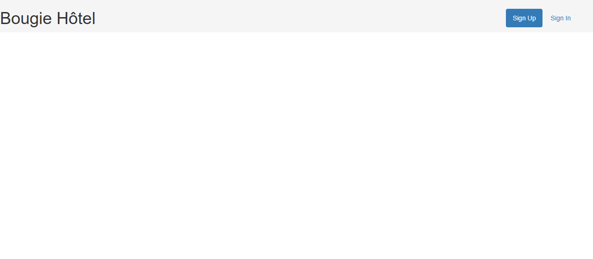
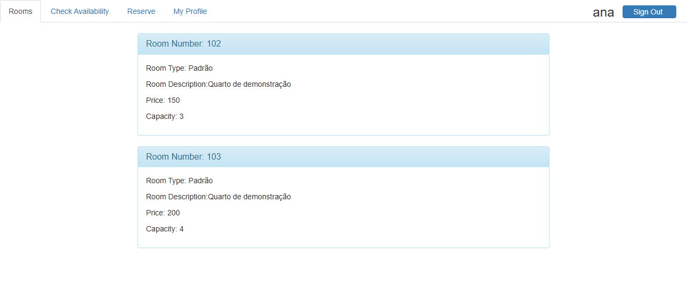
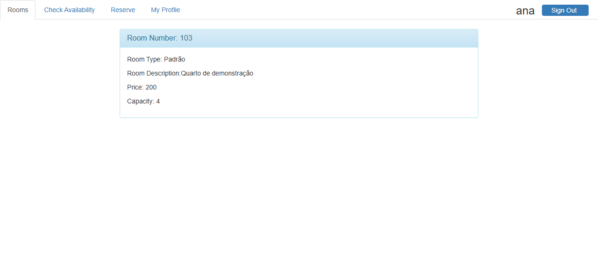
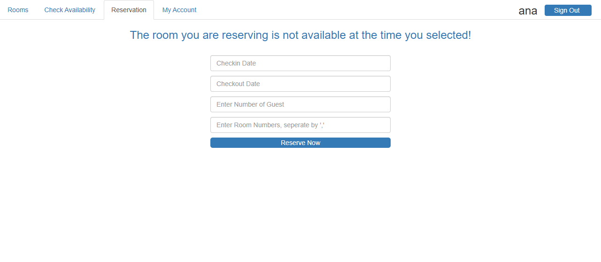
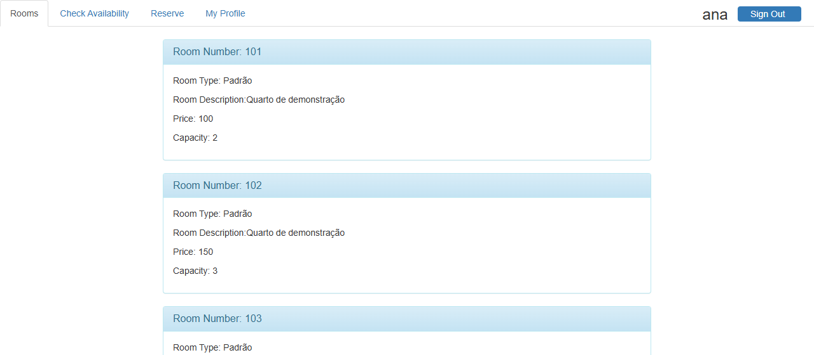
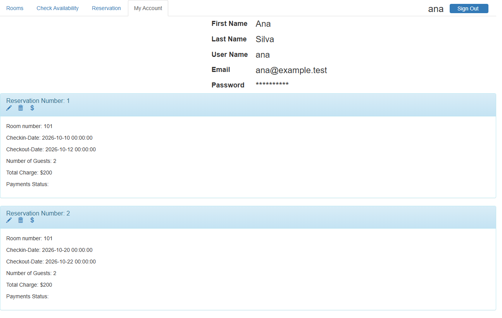
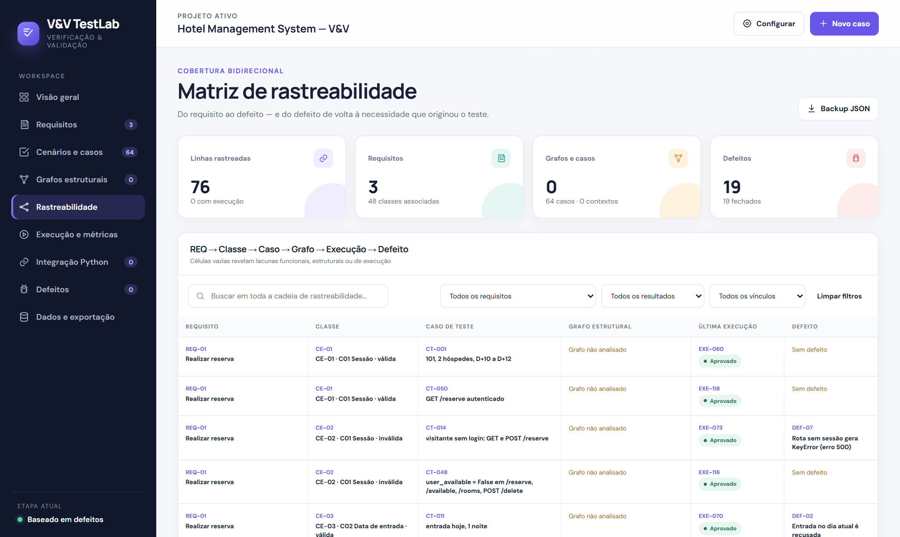

71b396bab15a840deab61a05d5c762173e8ea410upstream-71b396b, sut-original, sut-corrigido)As três técnicas foram aplicadas na ordem exigida (funcional → estrutural → baseada em defeitos) sobre os três requisitos principais do sistema, todos ligados à reserva de quartos: REQ-01 Reservar quartos, REQ-02 Data de entrada e REQ-03 Data de saída. Os demais requisitos funcionais foram catalogados (seção 1.2). Os mesmos 15 casos de teste foram usados nas três etapas: a etapa estrutural reaproveitou 5 deles para percorrer os grafos de fluxo e ampliou 3 com o cenário que faltava para a cobertura; a de mutação rodou os 15 contra cada mutante e ampliou 4 para matar os sobreviventes. Nenhum caso novo foi criado depois da etapa funcional.
| Etapa | Técnica | Código | Casos (testes pytest) | Cobertura de comandos | Cobertura de desvios | Escore de mutação |
|---|---|---|---|---|---|---|
| 1 | Funcional (classes de equivalência + valor limite) | original | 15 (15 testes) | 60/63 (95,2%) | 29/34 (85,3%) | — |
| 2 | Estrutural (5 casos reaproveitados; meta: 100% de comandos e desvios viáveis) | original | 15 (18 testes) | 63/63 (100,0%) | 33/34 (97,1%) | — |
| — | Correção dos defeitos; mesmos casos | corrigida | 15 (18 testes) | 65/65 (100,0%) | 28/28 (100,0%) | 94,8% (127/134; bruto 90,1%) |
| 3 | Baseada em defeitos (Cosmic Ray; mesmos 15 casos, 4 ampliados) | corrigida | 15 (22 testes) | 65/65 (100,0%) | 28/28 (100,0%) | 100,0% (134/134; bruto 95,0%) |
A cobertura e a mutação consideram as funções dos três requisitos em hotel/views.py (seção 5). Os testes revelaram 10 defeitos nos três requisitos. O principal é um predicado de conflito de datas que é uma tautologia: depois da primeira reserva, o quarto nunca mais pode ser reservado, qualquer que seja a data de entrada ou de saída. Testes complementares de dois requisitos secundários, cancelamento (RF-08) e consulta de disponibilidade (RF-04), revelaram outros 9 defeitos (seção 9), totalizando 19. Todos os defeitos foram corrigidos em commits separados no fork e confirmados pelos testes que os revelaram. A suíte final passa integralmente no programa corrigido. A mutação foi aplicada ao programa corrigido, que é o código submetido aos mutantes.
O Hotel Management System é uma aplicação web em Python de autoria de Crystal Yuecen Wang. Foi desenvolvida como projeto final da disciplina ECE 464 – Databases, sob orientação do professor Eugene Sokolov, e publicada no GitHub (8 commits, último em 71b396b). Segundo o README, o objetivo é "construir um sistema de gestão hoteleira eficiente e seguro, que ajude o negócio a se manter organizado e com as informações acessíveis". O público são hóspedes, que se cadastram, reservam, alteram, cancelam e pagam, e a administração do hotel, que mantém quartos e tipos de quarto no banco.
Por que é adequado: é software de terceiros, escrito em Python e com finalidade real de uso. Tem banco relacional (6 tabelas com chaves estrangeiras), autenticação por sessão, regras de negócio com datas, capacidade e custo, e várias rotas HTTP. Isso justifica aplicar as três técnicas. O tamanho (≈350 linhas de código, seção 2) permite chegar a análises completas, como cobertura de desvios de 100% e mutação sem amostragem, em vez de análises parciais.
Arquitetura: Flask 0.12 (rotas em hotel/views.py), WTForms/Flask-WTF (hotel/forms.py), SQLAlchemy/Flask-SQLAlchemy 2.1 (hotel/models.py), SQLite e templates Jinja2 com Bootstrap. As relações são reservations.ruid → user.uid, booked.brid → reservations.rid, booked.room_id → rooms.room_number e payment.prid → reservations.rid.
| RF | Funcionalidade | Rota | Situação no estudo |
|---|---|---|---|
| RF-01 | Cadastrar usuário | /signup |
documentado |
| RF-02 | Entrar e sair (sessão) | /signin, /logout |
pré-condição de REQ-01 (classes de sessão) |
| RF-03 | Listar quartos e tipos | /rooms |
documentado (destino da reserva e da consulta) |
| RF-04 | Consultar disponibilidade por período e hóspedes | /available → /rooms |
documentado, com testes complementares |
| RF-05 | Reservar um ou mais quartos, com custo por diária | /reserve |
REQ-01; datas em REQ-02/REQ-03 |
| RF-06 | Minha conta: dados, reservas, custos e pagamentos | /about_user |
documentado (usado nas capturas) |
| RF-07 | Alterar reserva | /update/<rid> |
documentado |
| RF-08 | Cancelar reserva | /delete/<rid> |
documentado, com testes complementares |
| RF-09 | Registrar pagamento | /payment/<rid> |
documentado |
Recorte (3 requisitos principais), todos sobre a reserva de quartos:
reserve, _ler_quartos, _quartos_ocupados, _periodos_conflitam.MM/DD/AAAA; não pode ser passada (hoje é permitido); pode coincidir com a saída de outra estadia do mesmo quarto.MM/DD/AAAA; posterior à entrada (mínimo 1 noite); define o número de diárias cobradas (cal_cost); pode coincidir com a entrada de outra estadia do mesmo quarto.Os demais RFs não recebem testes completos. Alteração (RF-07) reaproveita as regras da reserva, e cadastro, conta e pagamento (RF-01, RF-06, RF-09) não têm regra de negócio verificável além da gravação. A consulta de disponibilidade (RF-04) antecede a reserva, mas tem formulário e regras próprias; para manter o recorte enxuto, ela e o cancelamento (RF-08) ficaram como requisitos secundários, com 14 casos complementares (tests/test_04_secundarios.py, marca secundario) fora das métricas.
O sistema foi instalado com setup_local.ps1. O script cria um ambiente Python 3.9 com versões compatíveis com o código de 2019. compat.py repõe time.clock, removido no Python 3.8 e usado por Flask-SQLAlchemy 2.1. hotel/__init__.py passou a ler a URI do banco de HOTEL_DB_URI. Nenhuma regra de negócio foi alterada nessa preparação: o diff entre upstream-71b396b e sut-original não toca views.py, models.py nem forms.py. As telas abaixo foram capturadas pelo script scripts/capturar_telas.py, que sobe o servidor com a base de demonstração e navega com o Microsoft Edge.

Página inicial do sistema original em execução (Flask, porta local).
Lista de quartos após o login de Ana (código original).

Consulta de 20/10/2026 a 22/10/2026 para 4 hóspedes no original (capturas de 30/09/2026): o 101, livre nesse período, não aparece (DEF-01), e o 102, com capacidade 3, aparece (DEF-14).

Mesma consulta no código corrigido: só o quarto de capacidade 4 aparece.

Reserva do 101 de 20/10/2026 a 22/10/2026 recusada no original, embora o quarto só esteja ocupado de 10/10/2026 a 12/10/2026 (DEF-01).

Mesma reserva aceita no código corrigido.

“My Account” no código corrigido: reservas, custos e o botão de cancelamento via POST.
Medidas sobre o código do upstream (tag upstream-71b396b), extraído com git archive. Só entram app.py e o pacote hotel/. Ficam de fora os testes e scripts desta análise, os ambientes virtuais (.venv*) e as bibliotecas de front-end vendorizadas (hotel/static/bootstrap). Comando único: python scripts/metricas_codigo.py. As saídas completas estão em evidencias/metricas/.
| Métrica | Valor | Ferramenta e comando |
|---|---|---|
| Módulos Python | 5 | app.py, hotel/__init__.py, forms.py, models.py, views.py |
| LOC (linhas físicas) | 428 | radon raw -s app.py hotel |
| SLOC (linhas de código) | 354 | radon raw -s app.py hotel |
| LLOC (linhas lógicas) | 341 | radon raw -s app.py hotel |
| Linhas de código (pygount) | 352 | pygount --format=summary --suffix=py app.py hotel |
| Classes | 12 | radon cc -s -a app.py hotel (6 formulários + 6 modelos) |
| Funções | 13 | idem (12 em views.py + length_check) |
| Métodos | 6 | idem (construtores dos modelos) |
| Complexidade ciclomática média / máxima | 5,0 / 25 | idem; reserve = 25 e update_reservation = 24 (grau D) |
A diferença entre SLOC do radon (354) e Code do pygount (352) vem das duas linhas de docstring/continuação que cada ferramenta classifica de forma distinta. reserve (CC = 25), a função mais complexa do sistema, está no recorte.
Oráculos. Os resultados esperados vêm do README ("check-in no passado", "quartos indisponíveis no período", "quartos que não comportam o número de hóspedes", "a reserva só pode ser alterada/excluída pelo usuário em My Account") e da interface, que traz os formulários com datas MM/DD/AAAA, hóspedes inteiros e quartos separados por vírgula. Para o que o README não fixa, foram adotadas convenções declaradas: estadia como intervalo semiaberto [entrada, saída), em que um hóspede pode entrar no dia em que outro sai; métodos HTTP seguros, em que GET não altera dados; e integridade referencial ao cancelar.
Ambiente. Windows 11, Python 3.9.25 (aplicação e pytest) e Python 3.12 (Cosmic Ray, em ambiente separado porque exige SQLAlchemy ≥ 1.4, incompatível com Flask-SQLAlchemy 2.1). Cada caso usa SQLite em memória recriado pela fixture baseline, com três quartos (101: R$ 100/noite, 2 pessoas; 102: R$ 150, 3; 301: R$ 200, 4) e dois usuários (Ana e Bruno). As datas dos casos são reais e fixas (março de 2030, no futuro, para a suíte continuar válida); só os casos de "hoje" e "ontem" usam a data do dia da execução.
Versões do SUT. A variável SUT_VERSAO escolhe o código importado pelos testes. Com original, é usado .sut-original/hotel, extraído da tag sut-original. Com corrigida, é usado hotel/. Na versão original, cada caso marcado @pytest.mark.defeito("DEF-xx", ...) recebe xfail(strict=True): ele precisa falhar para confirmar que o defeito existe. Se um defeito "sumir", o XPASS estrito quebra a execução. Na versão corrigida, nenhum caso é marcado e todos precisam passar.
Rastreabilidade. Cada função de teste leva o identificador do caso no nome (test_CT_001_...). A parte funcional de cada caso tem a marca @pytest.mark.funcional; as ampliações feitas nas etapas seguintes são outras funções com o mesmo identificador e a marca da etapa (estrutural ou mutacao), como test_CT_001_ampliacao_.... Cada função traz ainda as classes que exercita (@pytest.mark.ce("CE-01", ...)) e, quando é o caso, o defeito revelado. O plugin em tests/conftest.py exporta essa matriz (--rastreabilidade), e scripts/evolucao.py verifica que toda classe de equivalência tem ao menos um caso funcional (Apêndice A). A cadeia é REQ → CE → CT → execução pytest → DEF → commit de correção.
Execução. etapas.ps1 roda tudo em sequência e grava as evidências em evidencias/<etapa>/: pytest.txt (saída -v -rxX e relatório term-missing), junit.xml, coverage.json, htmlcov/, rastreabilidade.json e cobertura-recorte.json. A ordem das etapas também aparece no histórico do fork (seção 6).
Gestão dos testes (V&V TestLab). Requisitos, classes, casos, execuções, defeitos e métricas também foram organizados no V&V TestLab, uma aplicação web local de gestão de testes. Ela se conecta ao repositório por uma ponte HTTP restrita a 127.0.0.1 (integration/vv_bridge.py), que executa o pytest com coverage.py e o Cosmic Ray e importa o JUnit, a cobertura das funções do recorte e o escore de mutação, vinculando cada resultado ao caso pelo identificador CT-xxx. O projeto importável (output/hotel-vvtestlab-projeto-inicial.json) e o estudo completo (output/hotel-vvtestlab-backup.json) são gerados das mesmas evidências deste relatório.

Matriz de rastreabilidade do V&V TestLab com o estudo do hotel carregado.
As condições de entrada dos três requisitos foram particionadas em 22 classes (11 válidas e 11 inválidas): 16 em REQ-01, 4 em REQ-02 e 2 em REQ-03. A tabela é gerada do catálogo tests/classes_equivalencia.json, o mesmo que o script de rastreabilidade usa para verificar a cobertura das classes. As classes dos requisitos secundários (CE-31 a CE-47) estão no mesmo catálogo e são usadas só pelos casos complementares.
| Req. | Condição de entrada | Classes válidas | Classes inválidas |
|---|---|---|---|
| REQ-01 Reservar quartos | C01 Sessão | CE-01 Usuário autenticado | CE-02 Sem sessão (nunca fez login) ou sessão encerrada |
| C02 Formato dos quartos | CE-03 Números inteiros separados por vírgula | CE-04 Texto não numérico | |
| C03 Existência dos quartos | CE-05 Todos os quartos existem | CE-06 Algum quarto não existe | |
| C04 Repetição de quartos | CE-07 Sem repetição | CE-08 Quarto repetido | |
| C05 Quantidade de quartos | CE-09 Um quarto; CE-10 Vários quartos (custo e capacidade somados) | — | |
| C06 Nº de hóspedes | CE-11 Inteiro de 1 até a capacidade somada dos quartos | CE-12 Menor que 1; CE-13 Maior que a capacidade somada; CE-14 Não inteiro (texto) | |
| C07 Ocupação do quarto no período | CE-15 Nenhuma estadia do quarto com interseção (inclui estadias adjacentes e reservas de outros quartos) | CE-16 Estadia existente do quarto com interseção de ao menos uma noite | |
| REQ-02 Data de entrada | C08 Entrada em relação a hoje | CE-17 Hoje ou data futura | CE-18 Data passada |
| C09 Formato das datas | CE-19 Entrada e saída válidas no formato MM/DD/AAAA | CE-20 Data malformada, inexistente ou ausente | |
| REQ-03 Data de saída | C10 Duração da reserva (saída − entrada) | CE-21 1 noite ou mais; cada noite é uma diária cobrada | CE-22 0 noites ou negativa (saída igual ou anterior à entrada) |
Regra de derivação. Um caso pode cobrir várias classes válidas ao mesmo tempo (CT-001 cobre dez). Cada classe inválida tem exatamente um caso próprio, em que todas as outras entradas são válidas, para que a rejeição só possa ser atribuída àquela classe. Por isso o CT-007 usa 101,999 com 2 hóspedes, e não 999 com 0 hóspedes, o que misturaria CE-06 e CE-12. Assim, 11 casos cobrem as 11 classes inválidas e 4 casos cobrem as válidas e os limites.
Hoje = dia da execução (D). Reserva existente usada nos limites de interseção: quarto 101 de 10/03/2030 a 12/03/2030. Para manter a suíte enxuta, os pontos de limite foram embutidos nos próprios casos de classe: o caso de cada classe inválida usa o valor imediatamente fora do limite, e os casos válidos usam o valor exatamente no limite.
| Req. | Variável (limite) | Imediatamente fora | No limite | Justificativa |
|---|---|---|---|---|
| REQ-01 | Hóspedes, mínimo (1) | 0 → rejeitar (CT-009) | 1 → aceitar (CT-001) | Uma reserva precisa de ao menos um hóspede. |
| REQ-01 | Hóspedes, máximo somado (101+102: 5) | 6 → rejeitar (CT-010) | 5 → aceitar (CT-002) | Verifica se a capacidade é somada quando há vários quartos. |
| REQ-02 | Data de entrada (mín. = hoje) | D−1 → rejeitar (CT-013) | D → aceitar (CT-004) | O README exige "pelo menos hoje"; a fronteira passado/presente é onde se costuma errar comparando data com data-hora. |
| REQ-02 | Entrada × saída existente (12/03/2030) | entrada 11/03/2030 → conflito (CT-012) | entrada 12/03/2030 → livre (CT-003) | Com intervalo [entrada, saída), entrar no dia em que o outro sai não conflita. |
| REQ-03 | Duração da reserva (mín. = 1 noite) | 0 → rejeitar (CT-015) | 1 → aceitar, custo 100 (CT-004) | Saída = entrada não gera diária; 2 noites custam 200 (CT-001). |
O limite simétrico "saída no dia da entrada de outra estadia" não entrou na etapa funcional; a mutação mostrou essa lacuna e ele foi acrescentado como ampliação do CT-003 (seção 7.3).
Legenda: P = passou no original; F = falhou no original, confirmando o defeito indicado (xfail estrito). No código corrigido, todos passam. Valores não citados usam o padrão dos testes: quarto 101, 2 hóspedes, de 10/03/2030 a 12/03/2030. "Hoje" e "ontem" são relativos ao dia da execução.
| Caso | Classes | Entrada / cenário | Resultado esperado | Original |
|---|---|---|---|---|
| CT-001 | CE-01, 03, 05, 07, 09, 11, 15, 17, 19, 21 | 101, 1 hóspede, de 10/03/2030 a 12/03/2030 | redireciona a /rooms; custo R$ 200; vínculo (reserva, 101) |
P |
| CT-002 | CE-10, CE-11 | 101 e 102; 5 hóspedes (= capacidade somada); de 10/03/2030 a 13/03/2030 | aceita; custo (100+150)×3 = R$ 750 | P |
| CT-003 | CE-15, CE-17 | 101 ocupado de 10/03/2030 a 12/03/2030; nova reserva de 12/03/2030 a 14/03/2030 (entra no dia da saída) | aceita | F – DEF-01 |
| CT-004 | CE-17, CE-21 | entrada hoje, saída amanhã (1 noite) | aceita; custo R$ 100 | F – DEF-02 |
| CT-005 | CE-02 | visitante sem login: GET e POST /reserve |
redireciona a /; nada gravado |
F – DEF-07 |
| CT-006 | CE-04 | quartos abc |
recusa (/reserve), nada gravado |
F – DEF-04 |
| CT-007 | CE-06 | quartos 101,999, 2 hóspedes |
recusa; nenhum vínculo | F – DEF-05 |
| CT-008 | CE-08 | quartos 101,101 |
recusa | F – DEF-06 |
| CT-009 | CE-12 | 0 hóspedes | recusa | F – DEF-03 |
| CT-010 | CE-13 | 101 e 102 com 6 hóspedes (capacidade 5) | recusa | P |
| CT-011 | CE-14 | hóspedes dois |
recusa | F – DEF-19 |
| CT-012 | CE-16 | 101 ocupado de 10/03/2030 a 12/03/2030; nova reserva de 11/03/2030 a 13/03/2030 | recusa | P |
| CT-013 | CE-18 | entrada ontem | recusa | P |
| CT-014 | CE-20 | entrada 2030-13-01 |
recusa | F – DEF-18 |
| CT-015 | CE-22 | saída = entrada (10/03/2030, 0 noites) | recusa | P |
Resultado (código original, evidencias/funcional-original/): 15 casos, 6 passaram e 9 falharam confirmando 9 defeitos dos três requisitos (DEF-01 a DEF-07, DEF-18 e DEF-19). As falhas têm causas distintas, conferidas com --runxfail: KeyError: 'user_available', ValueError em int('abc'), TypeError em combine(None) e na comparação com None, além de redirecionamentos diferentes do oráculo. Por requisito (pelo requisito da classe principal de cada caso): REQ-01 com 11 casos, REQ-02 com 3 e REQ-03 com 1. Cobertura do recorte: 60/63 comandos (95,2%) e 29/34 desvios (85,3%).
Critério: todos-os-nós e todos-os-arcos (comandos e desvios, coverage run --branch) nas duas funções que implementam os três requisitos no original: reserve (reserva e validação das datas) e cal_cost (diárias entre entrada e saída), com 63 comandos e 34 desvios. Meta: 100% dos comandos e 100% dos desvios viáveis.
Justificativa:
reserve (três níveis) e trariam pouco ganho diante do teste de mutação da etapa seguinte.A medição é restrita ao recorte porque medir views.py inteiro misturaria rotas deliberadamente não testadas (cadastro, login, consulta, alteração, pagamento) e tornaria qualquer meta global arbitrária.
Nenhum caso novo foi criado nesta etapa. Cinco casos funcionais foram reaproveitados para percorrer os grafos de fluxo de reserve, um para cada caminho principal da função: CT-001 (reserva aceita), CT-005 (sem login), CT-009 (dado inválido), CT-012 (quarto ocupado) e CT-013 (data no passado). O V&V TestLab mostra, em cada grafo, os nós e arestas que cada caso executou.
As lacunas de cobertura foram fechadas ampliando três desses casos com o cenário que faltava. A ampliação é outra função pytest com o mesmo identificador e a marca estrutural.
| Trecho não coberto (original) | Por que ficou de fora | Caso ampliado |
|---|---|---|
reserve 241 (desvio 189→241) |
A etapa funcional só enviava o formulário (POST); nunca o abria (GET) com usuário autenticado |
CT-001 |
reserve desvios 208→205 e 205→204 (vínculo de outro quarto; fim do laço interno sem conflito) |
Nos casos funcionais, todas as reservas prévias eram do mesmo quarto | CT-001 |
reserve 242–243 (desvio 186→242, ramo falso de if session['user_available']) |
O caso sem sessão não cria a chave, e o original lança KeyError antes do if; o ramo falso só roda com a chave valendo False, estado deixado pelo logout |
CT-005 |
reserve desvio 230→229 (if each.rid > current_id falso) |
Inviável: os IDs vêm em ordem crescente de chave primária, então cada rid supera o máximo anterior |
— |
A leitura do laço triplo para cobrir os desvios 208→205 e 205→204 expôs mais um defeito: o laço compara cada quarto reservado com as datas de todas as reservas, porque falta brid == rid. O CT-012 (quarto ocupado) foi ampliado com o cenário que prova isso e revelou o DEF-15.
| Ampliação | Classes | Cenário | Esperado | Original |
|---|---|---|---|---|
| CT-001 (estrutural) | CE-01, CE-15 | Bruno tem o 102 de 10/03/2030 a 12/03/2030; Ana abre o formulário e reserva o 101 nas mesmas datas | formulário exibido; reserva aceita | passou |
| CT-005 (estrutural) | CE-02 | user_available = False (depois de logout) em GET e POST /reserve |
redireciona a /; nada gravado |
passou |
| CT-012 (estrutural) | CE-15 | Ana tem o 101 de 10/03/2030 a 12/03/2030 e Bruno o 102 de 20/03/2030 a 22/03/2030; reservar o 101 de 20/03/2030 a 22/03/2030 | aceita | falhou – DEF-15 (mascarado por DEF-01) |
Resultado (código original, evidencias/estrutural-original/): os mesmos 15 casos (18 funções pytest); 5 casos passaram e 10 falharam (xfail estrito). Cobertura do recorte: 63/63 comandos (100%) e 33/34 desvios (97,1%). A meta foi atingida, porque o desvio restante é inviável.
A mutação precisa de uma suíte que passe no programa mutado. Por isso os defeitos foram corrigidos antes de gerar os mutantes, em commits separados no fork, cada um citando a causa e os casos que o confirmam. O diff completo está em evidencias/correcoes.diff (git diff sut-original sut-corrigido -- hotel).
| Commit | Defeitos | Casos que passaram a passar |
|---|---|---|
8a6c4bd |
DEF-07 (sessão sem chave → KeyError) |
CT-005 (e CT-102, complementar) |
2d1b2cd |
DEF-01 (tautologia), DEF-15 (produto cartesiano) | CT-003, CT-012 (ampliação) |
704bc86 |
DEF-02 (entrada hoje) | CT-004 |
644fd0d |
DEF-03, 04, 05, 06, 18, 19 (validação da reserva; transação única) | CT-006, 007, 008, 009, 011, 014 |
1313f12 |
DEF-08, 09, 10, 11 (RF-08 cancelamento, secundário; template com POST) |
CT-103 a CT-106 (complementares) |
9e66e2d |
DEF-12, 13, 14, 16, 17, 18 (RF-04 consulta, secundário; filtro na sessão) | CT-112 a CT-116 (complementares) |
As mensagens desses commits citam a numeração de casos da primeira versão da suíte (seção 8). Em cada passo, a suíte inteira foi executada para confirmar que nenhum caso que já passava regrediu. Resultado final no programa corrigido (tag sut-corrigido, evidencias/suite-corrigida/): 15/15 casos passaram (18 funções pytest), sem skip nem xfail, com cobertura do recorte de 65/65 comandos e 28/28 desvios (100%). Os 14 complementares também passam. O código corrigido tem menos desvios que o original (28 contra 34) porque o laço triplo foi trocado por uma junção SQL e por compreensões de conjunto. As funções auxiliares (_sessao_autenticada, _periodos_conflitam, _quartos_ocupados, _ler_quartos) entram no recorte medido.
Um ajuste de oráculo foi necessário e está registrado no commit 8a6c4bd. O CT-102 (complementar) esperava que o cancelamento sem sessão redirecionasse para /, mas o sistema redireciona para /rooms, que exige login e então leva a /. Isso não é defeito do software: o requisito verificado, preservar a reserva, não mudou.
break/continue e de palavras-chave, laço de zero iterações, remoção de decorador etc.hotel/views.py corrigido, sem amostragem: reserve, cal_cost e as quatro auxiliares. Total: 141 mutantes. As demais rotas, inclusive as dos requisitos secundários (check_available, show_rooms e delete_reservation), foram excluídas porque não fazem parte do recorte; incluí-las só acrescentaria sobreviventes triviais.mutacao/cosmic-ray-inicial.toml e mutacao/cosmic-ray-final.toml. O comando de teste é pytest -x -q, restrito a -m 'funcional or estrutural' na rodada inicial e a -m 'funcional or estrutural or mutacao' na final (os complementares ficam de fora). O script scripts/mutacao.py monta a sessão, executa cosmic-ray exec e grava sessao.sqlite, resumo.json, sobreviventes.txt (diff de cada sobrevivente) e execucao.txt.Os 15 casos (com as ampliações estruturais, 18 funções pytest) rodaram contra cada mutante. 141 mutantes: 127 mortos e 14 sobreviventes. Escore de 94,8% (127 ÷ (141 − 7)), descontando os 7 equivalentes identificados na análise abaixo; sem descontar, 90,1%. Execução em cerca de 4 minutos.
| # | Função (linha) | Mutação | Classificação | Ação |
|---|---|---|---|---|
| S1 | _periodos_conflitam (17) |
entrada_b < saida_a → <= |
Não equivalente. Nenhum caso tinha a nova estadia terminando no dia em que outra começa; a etapa funcional só testou o limite do outro lado (CT-003) | ampliação do CT-003 |
| S2 | _periodos_conflitam (17) |
entrada_b < saida_a → is not |
Não equivalente. Mesmo cenário: entre objetos de data distintos, is not é sempre verdadeiro |
ampliação do CT-003 |
| S3 | _periodos_conflitam (17) |
entrada_b < saida_a → != |
Não equivalente. Acusa conflito com qualquer estadia posterior não adjacente; nenhum caso reservava um período inteiramente anterior a uma reserva existente | ampliação do CT-003 |
| S4 | _quartos_ocupados (23) |
Booked.brid == Reservations.rid → >= |
Não equivalente. Nenhum caso tinha um vínculo de reserva posterior capaz de herdar as datas de uma reserva anterior de outro quarto | ampliação do CT-012 |
| S5 | _ler_quartos (34) |
set(numeros) <= existentes → < |
Não equivalente. Nenhum caso reservava todos os quartos do hotel | ampliação do CT-002 |
| S6 | reserve (230) |
d2 <= d1 → d2 == d1 |
Não equivalente. A classe CE-22 (saída igual ou anterior à entrada) foi testada só com 0 noites; uma saída anterior à entrada passaria | ampliação do CT-015 |
| S7 | cal_cost (268) |
each_room_id == e.room_number → is |
Não equivalente. is só coincide com == para inteiros de −5 a 256, que o CPython mantém em cache; nenhum caso reservava o quarto 301 |
ampliação do CT-002 |
| S8 | reserve (217) |
request.method == 'POST' → >= |
Equivalente. A rota só admite GET, POST, HEAD e OPTIONS, e nenhum método diferente de POST é ≥ 'POST' na ordem lexicográfica |
— |
| S9 | reserve (226) |
time(0, 0) → time(1, 0) em d1 |
Equivalente. d1 só é comparado com datas à meia-noite (d2 e datas gravadas) e com date.today() via d1.date(); deslocar a hora de d1 dentro do mesmo dia não inverte nenhuma comparação, e o valor gravado é checkin, não d1 |
— |
| S10 | reserve (226) |
time(0, 0) → time(0, 1) |
Equivalente (idem) | — |
| S11 | reserve (247) |
custo inicial 0 → 1 |
Equivalente. O valor é sobrescrito por cal_cost antes do único commit |
— |
| S12 | reserve (247) |
custo inicial 0 → -1 |
Equivalente (idem) | — |
| S13 | _ler_quartos (34) |
len(set(n)) != len(n) → < |
Equivalente. Um conjunto nunca tem mais elementos que a lista de origem, então != e < são a mesma condição |
— |
| S14 | _ler_quartos (34) |
len(set(n)) != len(n) → is not |
Equivalente no domínio. Os comprimentos só passam de 256 se o usuário informar mais de 256 quartos numa reserva, o que é irrealista; abaixo disso, o cache de inteiros do CPython torna is not idêntico a != |
— |
Em vez de criar casos novos, os sobreviventes não equivalentes foram mortos ampliando os casos que deveriam tê-los detectado (funções com a marca mutacao e o mesmo identificador):
| Caso ampliado | Classes | Cenário acrescentado | Esperado | Mata |
|---|---|---|---|---|
| CT-002 | CE-05, CE-10, CE-11 | Reservar os três quartos (101, 102 e 301) para 9 hóspedes, de 10/03/2030 a 12/03/2030 | aceita; custo R$ 900; 3 vínculos | S5, S7 |
| CT-003 | CE-15, CE-21 | 101 ocupado de 10/03/2030 a 12/03/2030; reservar de 08/03/2030 a 10/03/2030 (sai no dia em que a outra entra) e de 05/03/2030 a 07/03/2030 | as duas aceitas | S1, S2, S3 |
| CT-012 | CE-15 | Ana tem o 102 de 10/03/2030 a 12/03/2030 (reserva 1); Bruno tem o 101 de 20/03/2030 a 22/03/2030 (reserva 2); Ana reserva o 101 de 10/03/2030 a 12/03/2030 | aceita | S4 |
| CT-015 | CE-22 | saída (09/03/2030) um dia antes da entrada (10/03/2030) | recusa | S6 |
Rodada final (os mesmos 15 casos, 22 funções pytest, evidencias/mutacao-final/): 141 mutantes: 134 mortos, 7 sobreviventes, 0 incompetentes. Escore de 100,0% (134 ÷ (141 − 7)); inicial: 94,8%. Sem descontar os equivalentes: 95,0% (inicial: 90,1%). Execução em 223 s. As ampliações de 4 casos mataram os 7 sobreviventes não equivalentes. Restam 7 sobreviventes, todos classificados como equivalentes (S8 a S14); não equivalentes restantes: 0. O arquivo evidencias/mutacao-final/sobreviventes.txt traz o diff de cada um.
A suíte tinha 100% de cobertura de desvios e, mesmo assim, deixou vivos 7 mutantes não equivalentes. As fragilidades expostas foram:
<= por == mantinha esse caso correto e deixava passar períodos negativos.== por is no cálculo das diárias. Em produção, com quartos numerados acima de 256, esse erro passaria despercebido.brid == rid de uma junção errada) e uma reserva de todos os quartos.Os 7 equivalentes vêm de código defensivo ou redundante que veio do original: o custo provisório 0, time(0, 0) explícito e a comparação de tamanhos em _ler_quartos. Eles mostram também por que a fórmula desconta os equivalentes: o escore bruto subestima a qualidade da suíte. Com os equivalentes fora do denominador, o escore final é 100,0% (134/134): todos os mutantes que podiam ser mortos foram mortos.
| Etapa | Técnica | Código | Casos (testes pytest) | Casos que passaram | Casos que falharam (defeito confirmado) | Cobertura de comandos | Cobertura de desvios | Escore de mutação |
|---|---|---|---|---|---|---|---|---|
| 1. Funcional | Classes de equivalência + valor limite | original | 15 (15 testes) | 6 | 9 | 60/63 (95,2%) | 29/34 (85,3%) | — |
| 2. Estrutural | 5 casos reaproveitados; 3 ampliados para a cobertura | original | 15 (18 testes) | 5 | 10 | 63/63 (100,0%) | 33/34 (97,1%) | — |
| 3. Correção | Mesmos casos no código corrigido | corrigida | 15 (18 testes) | 15 | 0 | 65/65 (100,0%) | 28/28 (100,0%) | 94,8% (127/134; bruto 90,1%) |
| 4. Mutação | Mesmos 15 casos; 4 ampliados para matar sobreviventes | corrigida | 15 (22 testes) | 15 | 0 | 65/65 (100,0%) | 28/28 (100,0%) | 100,0% (134/134; bruto 95,0%) |
Escore de mutação = mortos ÷ (gerados − equivalentes) × 100, com os 7 equivalentes da seção 7.2; entre parênteses, o escore bruto (mortos ÷ gerados), que é o que o Cosmic Ray informa. Na linha 3, o escore é o da rodada inicial do Cosmic Ray, executada com a suíte funcional + estrutural sobre o código corrigido. Na linha 4, é o da rodada final, com a suíte completa. Nas etapas 1 e 2 não há escore, pois a mutação só é aplicada depois da correção dos defeitos (seção 6). Fonte: evidencias/evolucao.json, gerado por scripts/evolucao.py.
A ordem Funcional → Estrutural → (correção) → Mutação está no histórico do fork: afeb312 (etapa 1), ac975b7 (etapa 2), seis commits de correção, e 324e29a (etapa 3). Os commits posteriores reorganizaram o recorte. Na última revisão, a consulta de disponibilidade passou a requisito secundário, a suíte funcional foi enxugada para 15 casos (um por classe inválida, com os limites embutidos) e os casos foram renumerados. Todas as etapas foram então reexecutadas do zero, e as evidências deste relatório são dessa execução. Nessa versão, os mesmos 15 casos atravessam as três etapas: a estrutural e a de mutação não criaram casos, apenas ampliaram alguns deles (3 e 4 casos, respectivamente) com novas funções pytest de mesmo identificador. Nenhum caso foi removido ou marcado com skip. As datas fixas dos casos ficaram em março de 2030.
Linhas referentes ao hotel/views.py original (sut-original). Todos os defeitos têm teste automatizado que falha no original e passa no corrigido. DEF-08 a DEF-11 pertencem ao RF-08 (cancelamento) e DEF-12, DEF-13, DEF-14, DEF-16 e DEF-17 ao RF-04 (consulta), requisitos secundários, e foram revelados pelos testes complementares; os outros 10 pertencem aos três requisitos principais.
| ID | Gravidade | Função (linhas) | Entrada usada | Esperado | Obtido no original | Teste(s) | Causa no código | Correção (commit) |
|---|---|---|---|---|---|---|---|---|
| DEF-01 | Crítica | reserve 208–210; show_rooms 160–162 |
101 reservado de 10/03/2030 a 12/03/2030; reservar 101 de 12/03/2030 a 14/03/2030 (entrada no dia da saída) | aceita | recusado: "not available" | CT-003 (e sua ampliação) | (c1<=d1 and d2<=c2) or (d1<=c1 and d2<=c2) or (c1<=d1 and c2<=d2) or (d1<=c1 and c2<=d2) é tautologia: para quaisquer datas, uma alternativa é verdadeira. Quarto reservado uma vez fica bloqueado para sempre |
_periodos_conflitam(a1, a2, b1, b2) = a1 < b2 and b1 < a2 (2d1b2cd) |
| DEF-02 | Média | reserve 199 |
entrada hoje, 1 noite | aceita | recusado: "at least today" | CT-004 | d1 (hoje 00:00) comparado com datetime.now() |
d1.date() < date.today() (704bc86) |
| DEF-03 | Alta | reserve 217 |
101, 0 hóspedes | recusa | reserva gravada com 0 hóspedes e custo 200 | CT-009 | só há limite superior num > total_num |
exigir num >= 1 antes de gravar (644fd0d) |
| DEF-04 | Média | reserve 208, 215 |
quartos abc |
recusa com mensagem | 500 ValueError: invalid literal for int() |
CT-006 | int(each) sem tratamento |
_ler_quartos converte com try/except (644fd0d) |
| DEF-05 | Alta | reserve 213–216, 233–236 |
quartos 101,999, 2 hóspedes |
recusa | gravado; vínculo com quarto 999 inexistente | CT-007 | a existência só influencia indiretamente a soma de capacidades | _ler_quartos exige set(numeros) <= existentes (644fd0d) |
| DEF-06 | Alta | reserve 213–216, 233–236 |
quartos 101,101, 2 hóspedes |
recusa | 2 vínculos, capacidade 4 e custo 400 (dobro) | CT-008 | lista não é deduplicada nem validada | _ler_quartos recusa repetição (644fd0d) |
| DEF-07 | Média | delete_reservation 79; show_rooms 144; check_available 172; reserve 186 |
visitante sem login abre /reserve | redirecionar ao início | 500 KeyError: 'user_available' |
CT-005 (e CT-102, complementar) | session['user_available'] sem a chave, que só existe após login/logout |
_sessao_autenticada() com session.get(..., False) (8a6c4bd) |
| DEF-08 | Crítica | delete_reservation 79–86 |
Bruno envia POST /delete/<rid de Ana> |
403, reserva mantida | reserva de Ana excluída | CT-104 (e CT-108) | só verifica se alguém está logado, não o titular | 403 se reserva.ruid != usuário.uid (1313f12) |
| DEF-09 | Média | delete_reservation 80–81 |
POST /delete/999 |
404 | 500 UnmappedInstanceError |
CT-103 | query.get devolve None e db.session.delete(None) falha |
abort(404) (1313f12) |
| DEF-10 | Crítica | rota /delete/<rid> (77); about_user.html |
GET /delete/<rid> |
405, nada alterado | reserva excluída | CT-105 | exclusão por GET: links, pré-carregamento do navegador ou robôs apagam dados |
rota só POST; lixeira vira formulário POST com confirmação (1313f12) |
| DEF-11 | Alta | delete_reservation 81–86 |
cancelar reserva com pagamento | nenhum registro órfão | payment.prid aponta para reserva inexistente |
CT-106 | exclusão ignora Payment e usa vários commit() |
apaga Booked e Payment junto, em uma transação (1313f12) |
| DEF-12 | Média | check_available 175–178; show_rooms 162 |
consulta com entrada 12/03/2030 e saída 10/03/2030 | recusar com mensagem | aceita e lista todos os quartos, sem aviso | CT-112 | nenhum teste do período; show_rooms ignora o filtro em silêncio com c_in < c_out |
valida checkout > checkin (9e66e2d) |
| DEF-13 | Média | check_available 175–178 |
consulta com 0 hóspedes | recusar | aceita | CT-113 | num_guests não é validado |
exige inteiro >= 1 (9e66e2d) |
| DEF-14 | Média | show_rooms 155–163 |
consulta com 3 hóspedes | omitir o 101 (capacidade 2) | 101 listado | CT-114 | o número de hóspedes informado nunca é usado | filtra capacity >= hóspedes (9e66e2d) |
| DEF-15 | Alta | reserve 203–210; show_rooms 155–160 |
101 de Ana de 10/03/2030 a 12/03/2030 e 102 de Bruno de 20/03/2030 a 22/03/2030; reservar 101 de 20/03/2030 a 22/03/2030 | aceita | recusado (vínculo do 101 × datas da reserva do 102) | CT-012 (ampliação da etapa estrutural) | laço triplo reservas × vínculos sem brid == rid; mascarado por DEF-01 |
junção Booked.brid == Reservations.rid em _quartos_ocupados (2d1b2cd) |
| DEF-16 | Alta | global_avail 140; check_available 176–177; show_rooms 149–164 |
Ana consulta de 10/03/2030 a 12/03/2030; Bruno abre /rooms |
Bruno vê todos os quartos | Bruno vê a lista filtrada de Ana | CT-115 | filtro guardado em variável de módulo compartilhada por todas as sessões | filtro em session['filtro_disponibilidade'] (9e66e2d) |
| DEF-17 | Alta | show_rooms 163 |
101 e 102 ocupados; consulta 1 hóspede | só o 103 | 102 aparece | CT-116 | all_rooms.remove(each) dentro de for each in all_rooms pula o elemento seguinte |
lista nova por compreensão (9e66e2d) |
| DEF-18 | Média | reserve 191–192; show_rooms 153–154 |
data 2030-13-01 |
recusar | 500 TypeError: combine() argument 1 must be datetime.date, not None |
CT-014 | DateField inválido deixa data = None |
valida datas antes de usar (644fd0d, 9e66e2d) |
| DEF-19 | Média | reserve 217 |
hóspedes dois |
recusar | 500 TypeError: '>' not supported |
CT-011 | IntegerField inválido deixa None |
exige inteiro >= 1 (644fd0d) |
Fora do recorte: update_reservation, about_user e payment repetem a causa de DEF-07 (session['user_available']), e update_reservation repete a de DEF-01 e DEF-15. Eles não foram corrigidos nem testados por estarem fora do escopo. A correção seria a mesma, reutilizando _sessao_autenticada e _quartos_ocupados.
O cancelamento e a consulta de disponibilidade já fizeram parte do recorte em versões anteriores. Seus casos continuam executáveis em tests/test_04_secundarios.py (marca secundario), com as classes CE-31 a CE-47, mas ficam fora das métricas de cobertura e de mutação. Evidências: evidencias/secundarios-original/ e evidencias/secundarios-corrigida/.
Legenda como na seção 4.3. Casos da marca secundario (fora das métricas).
| Caso | RF | Classes | Entrada / cenário | Resultado esperado | Original |
|---|---|---|---|---|---|
| CT-101 | RF-08 | CE-31, 33, 35, 37, 39 | Ana cancela a própria reserva (POST) |
/rooms; reserva e vínculo removidos |
P |
| CT-102 | RF-08 | CE-32 | visitante sem login POST /delete/<rid> |
redireciona; reserva mantida | F – DEF-07 |
| CT-103 | RF-08 | CE-34 | POST /delete/999 |
404 | F – DEF-09 |
| CT-104 | RF-08 | CE-36 | Bruno cancela reserva de Ana | 403; reserva e vínculo mantidos | F – DEF-08 |
| CT-105 | RF-08 | CE-38 | GET /delete/<rid> |
405; reserva mantida | F – DEF-10 |
| CT-106 | RF-08 | CE-31, 33, 35, 37, 40 | cancelar reserva com pagamento | reserva e pagamento removidos | F – DEF-11 |
| CT-107 | RF-08 | CE-31, 33, 35, 37 | usuária com uid 1000 cancela a própria reserva | cancelada | P |
| CT-108 | RF-08 | CE-36 | Ana (uid 1) tenta cancelar reserva de Bruno (uid 2) | 403; reserva mantida | F – DEF-08 |
| CT-111 | RF-04 | CE-41, 43, 45, 46 | 101 ocupado de 10/03/2030 a 12/03/2030; consulta nas mesmas datas, 2 hóspedes | lista 102, 301 | P |
| CT-112 | RF-04 | CE-42 | consulta com entrada 12/03/2030 e saída 10/03/2030 | recusa (/available) |
F – DEF-12 |
| CT-113 | RF-04 | CE-44 | consulta com 0 hóspedes | recusa | F – DEF-13 |
| CT-114 | RF-04 | CE-46 | consulta com 3 hóspedes | lista 102, 301 (o 101 comporta 2) | F – DEF-14 |
| CT-115 | RF-04 | CE-47 | Ana consulta de 10/03/2030 a 12/03/2030 com o 101 ocupado; Bruno, em outra sessão, abre /rooms |
Bruno vê 101, 102, 301 | F – DEF-16 |
| CT-116 | RF-04 | CE-46 | 101 e 102 ocupados de 10/03/2030 a 12/03/2030; consulta nas mesmas datas, 1 hóspede | só o 301 | F – DEF-17 |
reserve, por exemplo, a linha do predicado tautológico era executada em todos os casos com reserva prévia e errava sempre que as estadias não se sobrepunham. Cobertura mede o que foi executado, não o que foi verificado. Quem revela o defeito é o oráculo.views.py inteiro, a cobertura final é de 40,7%. O restante corresponde a rotas fora do escopo. É uma lacuna declarada, não um defeito da suíte.POST) reduz o risco, mas não o elimina.models.py), fora do recorte.compat.py;git clone https://github.com/gabrielfjm/Hotel_Management_System ; cd Hotel_Management_System
./setup_local.ps1 # ambientes .venv (Python 3.9) e .venv-mutation (Python 3.12) via uv
./etapas.ps1 # métricas, etapas 1-2 (original), suíte corrigida, mutação inicial/final, suíte final
./executar.ps1 # sistema em http://127.0.0.1:5000 (ana@example.test / senha123)
Comandos isolados:
SUT_VERSAO=original pytest -m funcional -rxX (15 casos; 9 falhas esperadas)pytest -m 'funcional or estrutural or mutacao' (os 15 casos com todas as ampliações: 22 funções)pytest --cov=hotel.views --cov-branch --cov-report=term-missing.venv-mutation/Scripts/python.exe scripts/mutacao.py finalgit diff sut-original sut-corrigido -- hotel| Classe | Req. | Condição | Tipo | Descrição | Casos funcionais | Outros casos |
|---|---|---|---|---|---|---|
| CE-01 | REQ-01 | C01 Sessão | válida | Usuário autenticado | CT-001 | CT-001 |
| CE-02 | REQ-01 | C01 Sessão | inválida | Sem sessão (nunca fez login) ou sessão encerrada | CT-005 | CT-005 |
| CE-03 | REQ-01 | C02 Formato dos quartos | válida | Números inteiros separados por vírgula | CT-001 | — |
| CE-04 | REQ-01 | C02 Formato dos quartos | inválida | Texto não numérico | CT-006 | — |
| CE-05 | REQ-01 | C03 Existência dos quartos | válida | Todos os quartos existem | CT-001 | CT-002 |
| CE-06 | REQ-01 | C03 Existência dos quartos | inválida | Algum quarto não existe | CT-007 | — |
| CE-07 | REQ-01 | C04 Repetição de quartos | válida | Sem repetição | CT-001 | — |
| CE-08 | REQ-01 | C04 Repetição de quartos | inválida | Quarto repetido | CT-008 | — |
| CE-09 | REQ-01 | C05 Quantidade de quartos | válida | Um quarto | CT-001 | — |
| CE-10 | REQ-01 | C05 Quantidade de quartos | válida | Vários quartos (custo e capacidade somados) | CT-002 | CT-002 |
| CE-11 | REQ-01 | C06 Nº de hóspedes | válida | Inteiro de 1 até a capacidade somada dos quartos | CT-001, CT-002 | CT-002 |
| CE-12 | REQ-01 | C06 Nº de hóspedes | inválida | Menor que 1 | CT-009 | — |
| CE-13 | REQ-01 | C06 Nº de hóspedes | inválida | Maior que a capacidade somada | CT-010 | — |
| CE-14 | REQ-01 | C06 Nº de hóspedes | inválida | Não inteiro (texto) | CT-011 | — |
| CE-15 | REQ-01 | C07 Ocupação do quarto no período | válida | Nenhuma estadia do quarto com interseção (inclui estadias adjacentes e reservas de outros quartos) | CT-001, CT-003 | CT-001, CT-012, CT-003, CT-012 |
| CE-16 | REQ-01 | C07 Ocupação do quarto no período | inválida | Estadia existente do quarto com interseção de ao menos uma noite | CT-012 | — |
| CE-17 | REQ-02 | C08 Entrada em relação a hoje | válida | Hoje ou data futura | CT-001, CT-003, CT-004 | — |
| CE-18 | REQ-02 | C08 Entrada em relação a hoje | inválida | Data passada | CT-013 | — |
| CE-19 | REQ-02 | C09 Formato das datas | válida | Entrada e saída válidas no formato MM/DD/AAAA | CT-001 | — |
| CE-20 | REQ-02 | C09 Formato das datas | inválida | Data malformada, inexistente ou ausente | CT-014 | — |
| CE-21 | REQ-03 | C10 Duração da reserva (saída − entrada) | válida | 1 noite ou mais; cada noite é uma diária cobrada | CT-001, CT-004 | CT-003 |
| CE-22 | REQ-03 | C10 Duração da reserva (saída − entrada) | inválida | 0 noites ou negativa (saída igual ou anterior à entrada) | CT-015 | CT-015 |
| CE-31 | RF-08 | S1 Sessão | válida | Usuário autenticado | CT-101, CT-106, CT-107 | — |
| CE-32 | RF-08 | S1 Sessão | inválida | Sem sessão ou sessão encerrada | CT-102 | — |
| CE-33 | RF-08 | S2 Existência da reserva | válida | Reserva existente | CT-101, CT-106, CT-107 | — |
| CE-34 | RF-08 | S2 Existência da reserva | inválida | Identificador inexistente | CT-103 | — |
| CE-35 | RF-08 | S3 Titularidade | válida | Reserva do próprio usuário | CT-101, CT-106, CT-107 | — |
| CE-36 | RF-08 | S3 Titularidade | inválida | Reserva de outro usuário | CT-104, CT-108 | — |
| CE-37 | RF-08 | S4 Forma da requisição | válida | Confirmação explícita (POST) | CT-101, CT-106, CT-107 | — |
| CE-38 | RF-08 | S4 Forma da requisição | inválida | Navegação por link (GET) | CT-105 | — |
| CE-39 | RF-08 | S5 Registros dependentes | válida | Reserva sem pagamento | CT-101 | — |
| CE-40 | RF-08 | S5 Registros dependentes | válida | Reserva com pagamento registrado | CT-106 | — |
| CE-41 | RF-04 | Q1 Período da consulta | válida | Saída posterior à entrada | CT-111 | — |
| CE-42 | RF-04 | Q1 Período da consulta | inválida | Saída igual ou anterior à entrada | CT-112 | — |
| CE-43 | RF-04 | Q2 Hóspedes na consulta | válida | Inteiro maior ou igual a 1 | CT-111 | — |
| CE-44 | RF-04 | Q2 Hóspedes na consulta | inválida | Menor que 1 | CT-113 | — |
| CE-45 | RF-04 | Q3 Quarto no resultado | válida | Livre no período e com capacidade: exibido | CT-111 | — |
| CE-46 | RF-04 | Q3 Quarto no resultado | válida | Ocupado no período ou sem capacidade: omitido | CT-111, CT-114, CT-116 | — |
| CE-47 | RF-04 | Q4 Filtro entre sessões | válida | O filtro de um usuário não altera a lista de outro | CT-115 | — |